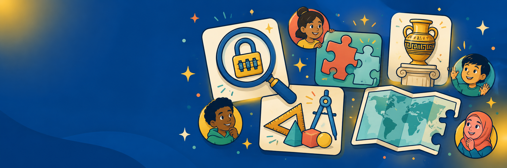

One home for self-contained, browser-based classroom activities — in seven languages, with no logins and no data collected. Pick an area to begin.
The CTOB library — self-contained reasoning escapes where students open clues, weigh evidence, and crack the locks. Includes the CLEAR system, Fourth of July, July 5 & Black Freedom Holidays, Bible as Literature, Science, and Idioms, plus a searchable catalog.
Open the breakout library →Problem-Based Learning units for the Texas history and social-studies classroom — real, ill-structured problems students work as stakeholders, built deliberately from surface to deep to transfer learning. Aligned to the social studies TEKS.
Open the PBL units →Investigation activities where students examine nine mystery exhibits in three steps — identify, understand, connect. Aligned to the Texas Essential Knowledge and Skills.
Enter the relic rooms →Breakout-style activities on being safe, kind, and responsible online — privacy, digital footprints, media balance, and standing up to unkindness — for the elementary and middle-grades classroom.
Open digital citizenship →Breakout-style activities that build a grounded understanding of generative AI — how it works, where it errs, and how to use it thoughtfully and ethically — for younger learners.
Open AI literacy →A searchable library of self-contained, browser-based math tools for every grade band, PreK through 12 — number lines, manipulatives, fraction bars, and more. Works offline; no logins, no data collected.
Open the math tools →A back-to-school worksheet collection for building classroom community — icebreakers and “all about me” activities across ELA, math, science, social studies, and fine arts, with printable PDFs. Aligned to the TEKS.
Open the worksheets →